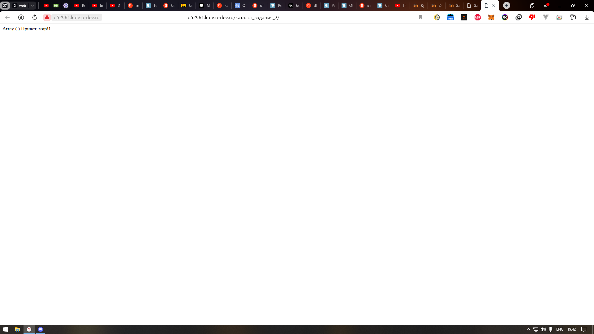

Проверяем работоспособность index.php
Подключаемся на сервер kubsu-dev.ru, вводим логин и пароль. Потом устанавливаем telnet соединение с сервером kubsu-dev.ru на 80 порте и запрашиваеми главную страницу командой GET / HTTP/1.0